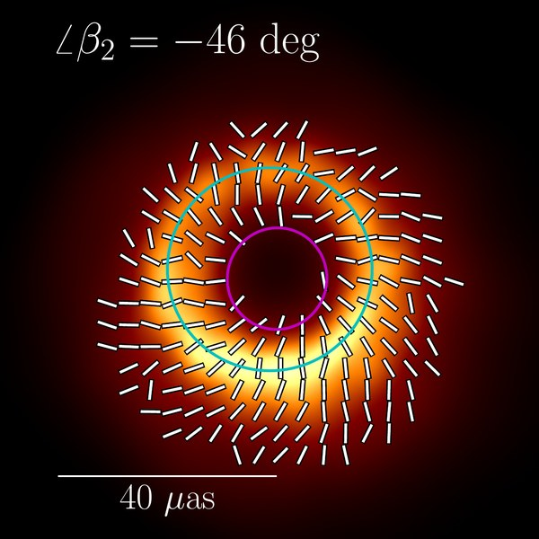

Sep 2026 – present

M87* polarization with the Black Hole Explorer
Undergraduate thesis (AST425Y) · Dr. Andrew Chael (NBIA, Copenhagen), A. Levis, R. Dahale
Could the proposed BHEX space mission detect polarization patterns just outside M87*’s event horizon? I’m simulating realistic observations in JAX to find how much observing time a detection needs. Paper planned for spring 2027.